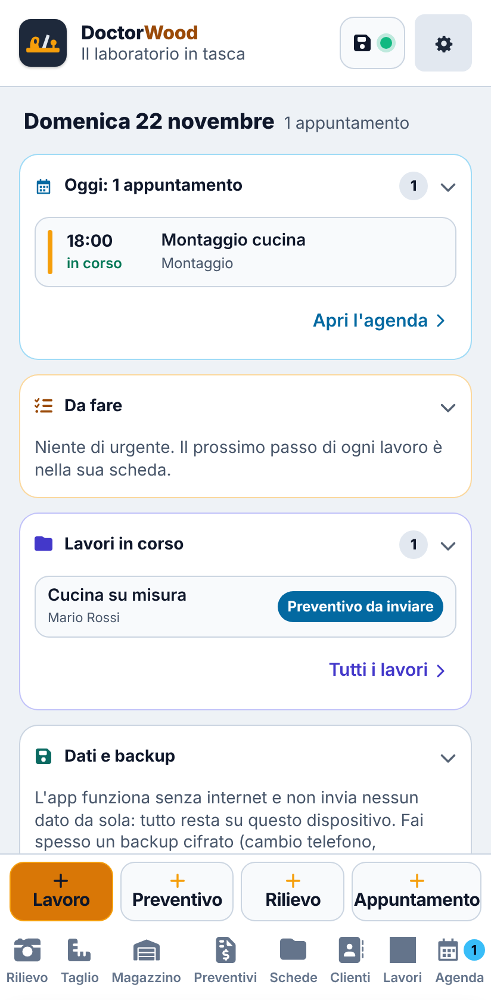
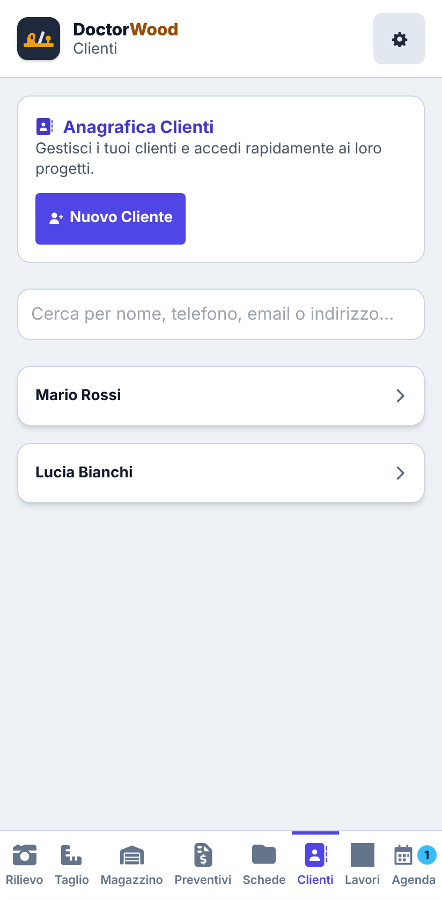
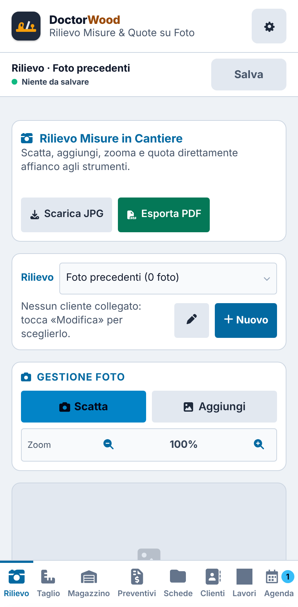
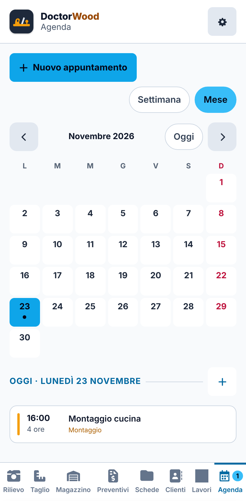
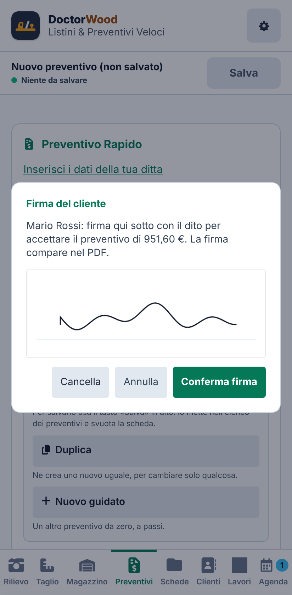
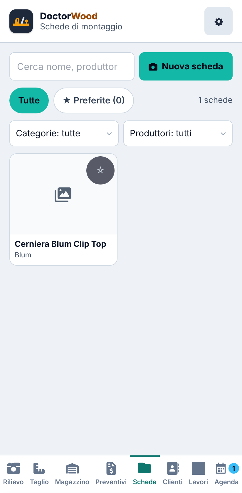
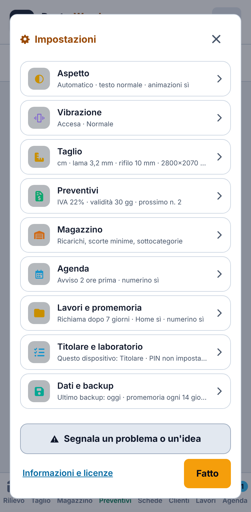
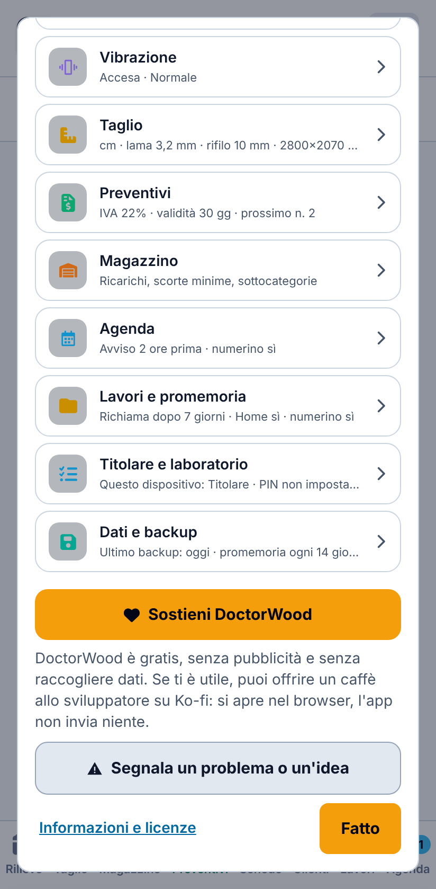

DoctorWood
The workshop in your pocket
Tutorials
How to do it, step by step: one card for each thing
App version {{VERSIONE}} · updated on {{DATA}}
The first time, on an Android 10 or later phone or tablet.

When a new version is out (DoctorWood checks by itself once a week, on the tablet too).

On first start, on your phone.

On first start, on the shop tablet.

Before your first quote.

Every morning.

A new customer.

A new commission arrives.

So you don't forget anything.

«Where are we with the Smiths' kitchen?»

On site.

Survey, delivery, installation.

To know how many panels you need and how to cut them.
For a standard cabinet: base, wall unit, tall unit…

After the calculation.
For the panel saw and the workshop.

The customer is waiting for a price.

The customer accepts in person.
When an invoice is due.

A new material in the price list.
Before calling the supplier.
Just once, with phone and tablet on the same Wi‑Fi.
The job is ready to make.
To block the days in the calendar.

In the shop, on the tablet.
A part just cut.
From the owner's phone.

The instructions for a hinge or a runner.
To shut it out at once.
Every two weeks, and before changing phone.
On a new phone.
To protect prices and customers.
Before selling or giving away the device.

To adapt the app.
So you don't keep retyping the same things.

To write to us.
If you find the app useful.